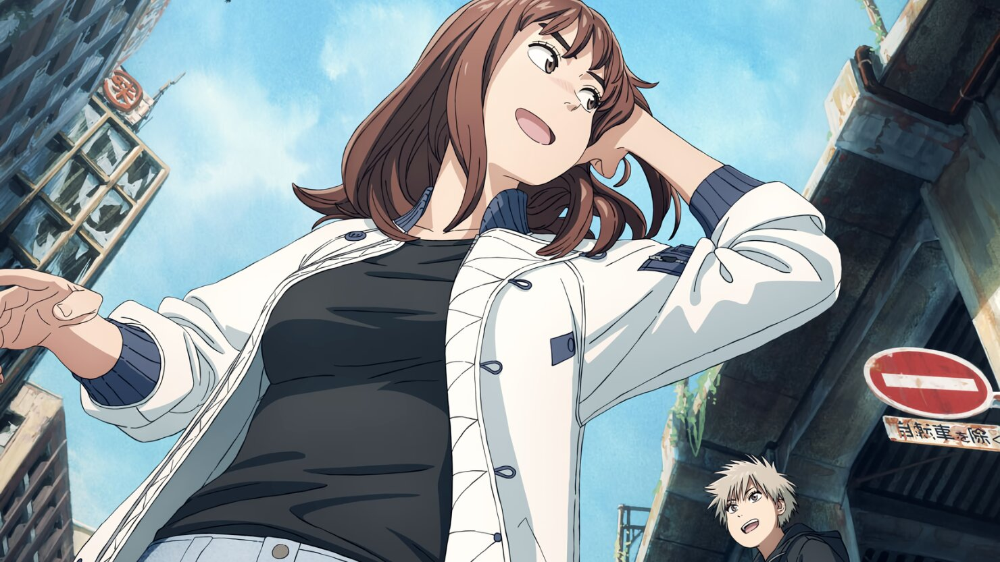

Телеэкранизация манги Масакадзу Ищигуро («А город всё цветёт») «Иллюзия рая» (Tengoku Daimakyou) обзавелась командой сэйю, а также ориентировочной датой выхода: сериал стартует в весеннем сезоне.
На стриме, посвященном аниме «Истребитель демонов: Деревня кузнецов» (Kimetsu no Yaiba: Katanakaji no Sato-hen), показали новый тизер. Ранее сообщалось, что сериал стартует в апреле с показа сдвоенного первого эпизода. В сериале будет экранизирована девятая сюжетная арка манги «Деревня кузнецов» (100–127 главы). С 3 февраля в кинотеатрах более чем 80 стран начался показ спешала «Мировой тур: Истребитель демонов: Собрание высших лун и деревня кузнецов» (World Tour Jouei: Kimetsu no Yaiba Jougen Shuuketsu, Soshite Katanakaji no Sato e). В эпизод войдут 10 и 11 серия аниме «Истребитель демонов: Квартал красных фонарей», а также первая серия «Деревни кузнецов».
6 февраля выйдет 10-й номер журнала Weekly Shonen Jump. В нём не будет новой главы манги «Моя геройская академия» (Boku no Hero Academia) Кохэя Хорикоси. Манга ушла на перерыв из-за состояния здоровья её автора. Но планируется, что сериализация «Моей геройской академии» возобновится в этом же месяце, и следующая глава манги будет опубликована в 12-м выпуске Weekly Shonen Jump, который выйдет 20 февраля. Манга Хорикоси публикуется в Weekly Shonen Jump издательства Shueisha с июля 2014 года и сейчас собрана в 37 томов. Общий мировой тираж «Моей геройской академии» превышает 85 млн копий. В России мангу выпускает издательство «Азбука». 4 февраля покажут 18-й эпизод шестого сезона аниме-сериала «Моя геройская академия».
Сюжет
За безопасными стенами в «детских садах» роботы воспитывают юношей и девушек. Каждый из обитателей «сада» обладает своим особенным даром. Во многом это место похоже на кусочек рая: высокие деревья, зелёная трава и плантации свежих овощей. Именно здесь живёт девушка по имени Токио. А внешний мир — это ад. Он лишь тень ушедшей технологической эпохи и теперь населён странными сверхъестественными существами. По этому миру путешествуют загадочный парень Мару и его телохранитель Кируко. Их единственная цель — найти «Рай»